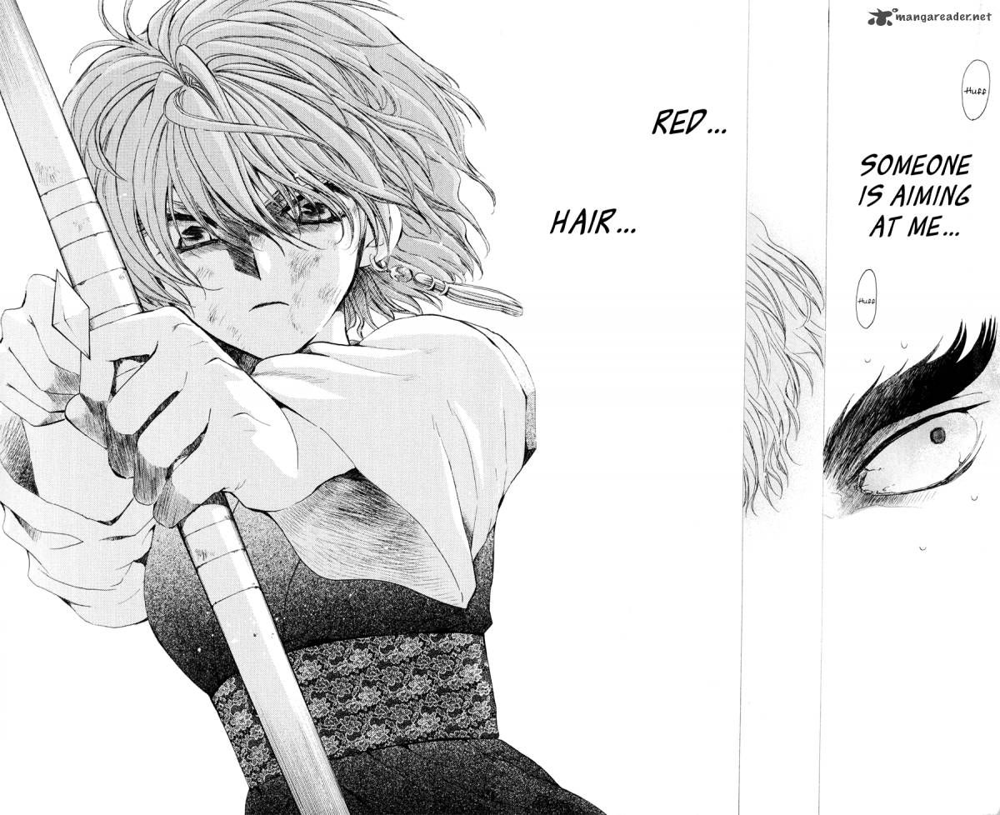

Stile Josei
Descrizione: Lo stile Josei si rivolge principalmente a un pubblico femminile adulto, presentando trame mature e complesse che esplorano una vasta gamma di temi della vita reale. I manga Josei affrontano spesso questioni come l'amore maturo, la carriera, la famiglia, l'autorealizzazione, la perdita e il cambiamento.
Caratteristiche principali:
- Rappresentazione realistica delle sfide e delle gioie della vita quotidiana
- Personaggi ben sviluppati che riflettono una gamma completa di emozioni umane
- Trame mature e complesse che esplorano temi universali con sensibilità e intelligenza
Esempi famosi: Esempi famosi di manga in stile Josei includono "Nana", "Paradise Kiss", "Honey and Clover", "March Comes in Like a Lion" e molti altri. Queste opere sono amate per la loro profondità emotiva, i personaggi ben definiti e le trame avvincenti.
